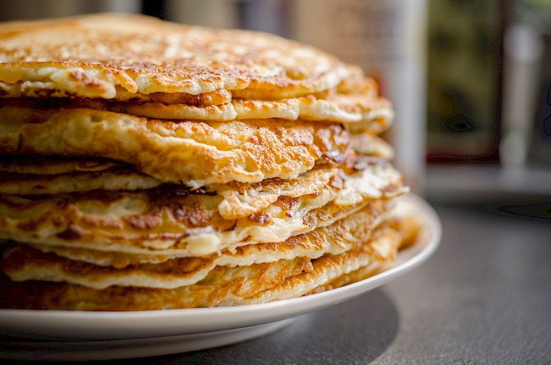

Een stapelpannekoeken zorgt altijd voor wat vrolijkheid in huis. Eet het voor ontbijt, lunch of diner om een heerlijk vol gevoel te hebben.
Probeer ook eens een hartige variant met ui en spinazie als je in een avontuurlijk bui bent!
Ingredienten
2 eieren
500mL melk
200g bloem
1 zakje vanille suiker
6 plakjes kaas
6 plakjes spek
stroop / suiker
50 bakboter of margerine

Bereiding
Mix de melk, ei, bloem en vanille suiker tot een glad beslag
Verwarm een koekepan voor en smelt een klontje boter
Giet een pollepel aan beslag in de pan en verdeel dit over de gehele pan
Wanneer de bovenkant helemaal droog is, flip je de pannekoek met een drievoudige schroef met een anderhalve salto op de andere kant en bak je hem voor nog 2 minuten.
Voeg indien nodig nog wat boter toe en herhaal stap 3 en 4 tot het beslag op is. Voeg spek toe voor het beslag in de pan gaat en kaas toe na het omdraaien naar gelang.
Serveer de pannekoeken op een stapel met stroop en suiker ernaast.